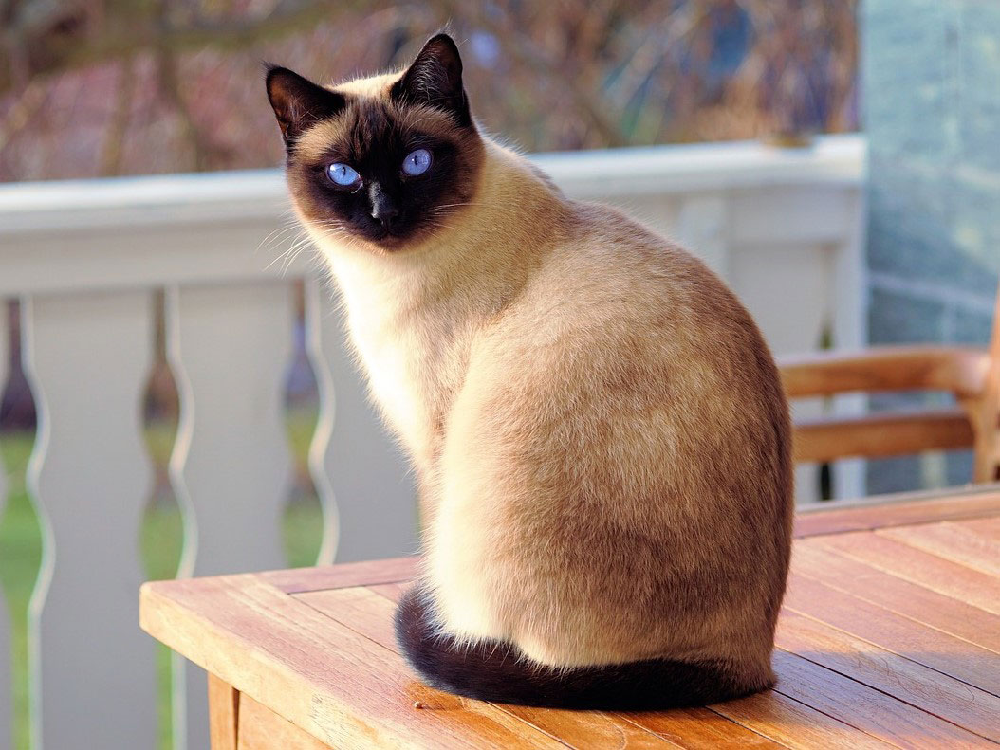
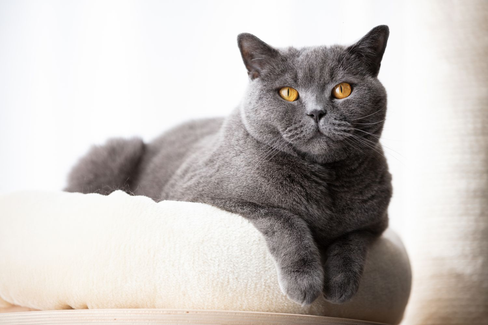

Сиамские кошки
Сиамские кошки — стройная, элегантная порода с характерным окрасом точек и пронзительными голубыми глазами. Они известны своим интеллектом и игривым характером, и их часто описывают как очень громких и общительных. Сиамские кошки, как правило, очень ласковы со своими владельцами и становятся верными и любящими компаньонами. Как правило, они хорошо ладят с детьми и другими домашними животными и известны своими грациозными, проворными движениями и игривым характером. Сиамские кошки обычно считаются умными и любопытными животными, и их легко обучить выполнять различные трюки и задачи. В целом, сиамская порода является популярным выбором для любителей кошек, которые ищут общительного и умного кошачьего компаньона.
Персидская кошка
Персидская кошка — популярная порода, известная своей длинной роскошной шерстью и элегантной грациозной внешностью. Круглая морда, большие глаза и компактное тело делают персидскую кошку поразительной и царственной. Персы известны своим милым, нежным нравом и ласковым характером. Они, как правило, спокойны и тихи, и предпочитают проводить время, бездельничая и обнимаясь со своими владельцами. Несмотря на свой спокойный характер, персидские коты также игривы и любят интерактивные игрушки и игры. Они адаптируются и могут процветать в различных условиях жизни, что делает их подходящим выбором для семей с детьми или другими домашними животными.

Мейн-кун
Мейн-кун — крупная и величественная порода кошек, известная своей густой роскошной шерстью и длинным пушистым хвостом. Родом из штата Мейн, эти кошки хорошо приспособлены к холодному климату и известны своим выносливым и покладистым характером. Они умны и игривы, с нежным нравом и любовью к человеческому общению. Мейн-куны также известны своим любопытным, общительным характером и ласковым собачьим поведением. Они являются одной из старейших естественных пород кошек в Северной Америке и высоко ценятся как компаньоны и выставочные животные.

Британская короткошерстная
Британская короткошерстная — крепкая, компактная порода кошек с широкой грудью, короткими ногами и круглой мордой. Они известны своей густой плюшевой шерстью самых разных цветов и узоров. Британские короткошерстные умны, приспосабливаемы и легки на подъем, что делает их идеальным выбором для семей с детьми или другими домашними животными. Они, как правило, спокойные и тихие, с нежным нравом и любовью к бездельничанию и объятиям. Несмотря на свой непринужденный характер, британские короткошерстные также игривы и любят участвовать в интерактивных играх со своими владельцами.
Сфинкс
Сфинкс — это порода кошек, известная своей безволосой морщинистой внешностью. Несмотря на отсутствие меха, сфинксы на самом деле не совсем лысые — у них на коже тонкий пушистый волосяной покров. Они мускулистые и спортивные, со средним телосложением и длинными худыми ногами. Кошки сфинксы известны своим дружелюбным, общительным характером, любовью к вниманию и человеческому общению. Они умны и любопытны, с игривым характером и любовью к интерактивным игрушкам и играм. Из-за безволосого тела сфинксы нуждаются в регулярном купании, чтобы их кожа оставалась здоровой и чистой.